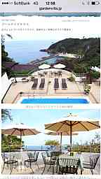

PARTICIPANTS:
DB ID: 285
Current name: ☀️🌴かわん🌴☀️
Address book name: Kauan Andriatti
User name: ☀️🌴かわん🌴☀️
Phone Number: 08049145265
Key: 080 4914 5265
DB ID: 423
Current name: SHOTA
Address book name: None
User name: SHOTA
Phone Number:
Key:
DB ID: 432
Current name: Ikumi
Address book name: None
User name: Ikumi
Phone Number:
Key:
DB ID: 449
Current name:
Address book name:
User name: eito
Phone Number:
Key:
DB ID: 440
Current name:
Address book name:
User name: DAIKI
Phone Number:
Key:
DB ID: 439
Current name: Kaz TNB
Address book name: None
User name: Kaz TNB
Phone Number:
Key:
DB ID: 0
Current name: You
Address book name: You
User name:
Phone Number:
Key:
Messages:
2013/09/25 11:05:33, "285:☀️🌴かわん🌴☀️":
Holaa!!✨
今週の日曜日に晴海埠頭公園で今年最後のブラジリアンBBQ主催しちゃうよ❗️❗️
寒くなる前にもう一度
美味しいお肉、ハッピーPeopleで盛り上がろう〜
会費
男性3000円 女性2000円
食べ飲み放題😍✨
参加希望の人は、FBの
イベントページで参加ボタンor直接参加のメッセージください❗️❗️
今日もHave a nice dayね😁✨
2013/09/25 11:05:35, "285:☀️🌴かわん🌴☀️":
2013/09/25 13:15:28, "423:SHOTA":
2013/10/15 16:44:24, "285:☀️🌴かわん🌴☀️":
Hallo!!!
来週の木曜日の7時から六本木のマンションのパーティルームでハロウィンBurrito Nightやるからみんなおいで〜(^O^)／
2013/10/15 16:44:36, "285:☀️🌴かわん🌴☀️":
2013/10/15 19:12:36, "432:Ikumi":
Oiiii!!:)
2013/10/15 19:12:43, "432:Ikumi":
何時まで～？^ ^
2013/10/15 19:13:57, "285:☀️🌴かわん🌴☀️":
久しぶり！
23時までだよ(^O^)／
2013/10/15 22:01:02, "449:":
kauan何日⁉︎
2013/10/15 22:04:01, "285:☀️🌴かわん🌴☀️":
24日だーよ！
2013/10/31 13:16:33, "285:☀️🌴かわん🌴☀️":
2013/10/31 13:16:38, "285:☀️🌴かわん🌴☀️":
🎃Happy Halloween👻
今年もやってきました‼︎
昨年1000人オーバーイベントでした✨✨
☆ポイポイハロウィン☆
今夜ψ(｀∇´)ψ 23時スタート‼︎
CowCowのゲストいってください＼(^o^)／男女ともに2000円になります
言わないと男3500女2500だ〜ょ💦
場所は
青山クリスタルラウンジ
住所東京都港区南青山3-1-5 ラ･クラースビルB1F電話番号03-5413-6350
携帯 08049145265
Halloween本番は31日でしょ！！w
みんなまってるよ(^O^)／
2013/10/31 13:16:38, "285:☀️🌴かわん🌴☀️":
2013/10/31 15:02:45, "440:":
2013/11/01 21:24:50, "439:Kaz TNB":
舞台の告知です！！
田邊和也、久しぶりに舞台に出演します！！！
皆様、是非お越しください
ご連絡お待ちしてます！！
日程、チケット入手方法、以下、詳細↓↓
United Performers' Studio
2013年度 UPSアカデミー 卒業公演
『陽のあたる庭』
原作、ジョンスタインベックの
「二十日鼠と人間」を、元に日本版として脚色したオリジナル作品です。
舞台は東京オリンピックを翌年に控えた昭和38年(1963年)の日本。
第二次世界大戦という激動の時代を生きてきた人々が織り成す物語です。
ストーリー概要は、近日パンフレットにてアップします。お待ち下さい。
【タイムテーブル】
ダブルキャスト
※ ★印が田邊和也、出演回です。
公演日程
12/4 水 ～12/8 日 全8公演
12/4 水 19:00～
12/5 木 ★ 19:00〜
12/6 金 ★ 14:00〜
19:00～
12/7 土 ★ 14:00～
19:00～
12/8 日 13:00～
★ 17:00〜
※12/6 金 の公演は平日の昼です。学生の皆様、または平日に時間がある方は、この回に観に来て頂けると助かります。
また、必然的に混み合わない回になると予想しますので、お勧めします。
【チケット】
前売り、当日共に 2500円
※今回はインターネット上での販売は致しません。
全て、僕から手渡し、または当日清算、受け渡しになります。
予約等につきましても、全て僕にご連絡して頂く形になります。
お手数ですが、携帯、email、facebook上のメッセージにて、
観覧希望日、人数、お名前を必須明記としてご連絡下さい。
facebook上でイベントに参加ボタンを押された方にはこちらからご連絡する場合もございます。
ご了承下さいm(_ _)m
【場所】
笹塚ファクトリー
〒151-0073東京都渋谷区笹塚1丁目56-7
笹塚駅 北口からすぐです
【キャスト・スタッフ】
近日パンフレットに記載して、アップします。お待ち下さい。
既に予約受け付け開始していますので、ドシドシご連絡下さい。
皆さんにお逢いできるのを楽しみしています！！
よろしくお願いします！！
田邊和也
2013/11/04 22:20:04, "0:You":
eito left the group.
2013/11/22 17:56:17, "285:☀️🌴かわん🌴☀️":
✨Hello Happy People✨
お疲れ様( ´ ▽ ` )ﾉ
ハッピーに頑張ってる？w
来週の29日、金曜日は麻布十番のNico FiveでSuper Happyな大感謝大忘年会を開催します！
今年もハッピーに過ごした人、ハッピーな人達に会いたい人はみんなCOME ON!
その後は青山のクリスタルラウンジで二次会もやりますので途中からでも参加OKだーよ👻
詳細はFacebookイベントページにてCheck Out👍
https://www.facebook.com/events/245019542313312/?source=1
Happy Friday Night!
2013/11/22 17:56:19, "285:☀️🌴かわん🌴☀️":
2013/12/02 11:01:05, "439:Kaz TNB":
再度詳細です！
舞台の告知させて頂きたくご連絡しました！
キンキンの連絡ですが、今週からですm(_ _)m
お忙しいとは思いますが、
是非お越しください
ご連絡お待ちしてます！！
日程、チケット入手方法、以下、詳細↓↓
United Performers' Studio
2013年度 UPSアカデミー 卒業公演
『陽のあたる庭』
原作、ジョンスタインベックの
「二十日鼠と人間」を、元に日本版として脚色したオリジナル作品です。
舞台は東京オリンピックを翌年に控えた昭和38年(1963年)の日本。
第二次世界大戦という激動の時代を生きてきた人々が織り成す物語です。
【タイムテーブル】
ダブルキャスト
※ ★印が田邊和也、出演回です。
公演日程
12/4 水 ～12/8 日 全8公演
12/4 水 19:00～
12/5 木 ★ 19:00～
12/6 金 ★ 14:00～
19:00～
12/7 土 ★ 14:00～
19:00～
12/8 日 13:00～
★ 17:00～
※12/6 金 の公演は平日の昼です。平日に時間がある方は、この回に観に来て頂けると助かります。
また、必然的に混み合わない回になると予想しますので、お勧めします。
【チケット】
前売り、当日共に 2500円
※今回はインターネット上での販売は致しません。
全て、僕から手渡し、または当日清算、受け渡しになります。
予約等につきましても、全て僕にご連絡して頂く形になります。
お手数ですが、
携帯 08011204613
email kazuyoung.j@gmail.com
メッセージにて、
観覧希望日、人数、お名前を必須明記としてご連絡下さい。
【場所】
笹塚ファクトリー
〒151-0073東京都渋谷区笹塚1丁目56-7
笹塚駅 北口からすぐです
【キャスト・スタッフ】
今週から既に予約受け付け開始していますので、ドシドシご連絡下さい。
皆さんにお逢いできるのを楽しみしています！！
よろしくお願いします！！
田邊和也
2014/01/14 17:56:03, "285:☀️🌴かわん🌴☀️":
みんなお疲れ様！！
来週の火曜日に新橋で新年会することになったよ( ´ ▽ ` )ﾉ
良かったらみんなきてね！！
2014/01/14 17:56:25, "285:☀️🌴かわん🌴☀️":
詳細はFBのイベントで送ってます😁✨
2014/01/31 17:46:46, "0:You":
DAIKI left the group.
2014/02/11 17:52:16, "285:☀️🌴かわん🌴☀️":
ほいほーい( ´ ▽ ` )ﾉ
お疲れ様😌✨
来週の23日のブラジリアンBBQ主催するから来れたらおいでよ〜💃💃
2014/02/11 18:04:18, "423:SHOTA":
いくよー！
2014/02/11 18:28:10, "0:You":
SHOTA invited 吉井めぐみ, 中塚ひろこ, じぇいこむ星人, A . Johan to the group.
2014/02/11 18:42:06, "0:You":
じぇいこむ星人 joined the group.
2014/02/11 18:42:22, "0:You":
吉井めぐみ joined the group.
2014/02/11 19:30:32, "285:☀️🌴かわん🌴☀️":
2014/02/11 19:42:40, "423:SHOTA":
2014/02/11 19:43:06, "285:☀️🌴かわん🌴☀️":
Kauan Andriatti sent you a photo.
2014/02/11 19:43:21, "423:SHOTA":
笑！
2014/02/11 19:43:28, "285:☀️🌴かわん🌴☀️":
今回は気合い入れて用意するよw
2014/02/11 19:43:36, "423:SHOTA":
食べたい！
2014/02/12 08:14:22, "0:You":
A . Johan joined the group.
2014/02/12 12:02:37, "0:You":
Kauan Andriatti changed the group's name to ✨真冬のBBQ In 晴海埠頭公園✨.
2014/02/12 22:42:11, "0:You":
SHOTA invited Miku Julie, 川上真理子, 聖毅 Seigo to the group.
2014/02/13 01:39:55, "0:You":
Miku Julie joined the group.
2014/03/04 12:58:53, "0:You":
A . Johan left the group.
2014/03/09 14:10:59, "285:☀️🌴かわん🌴☀️":
Beleza!!!!
再来週の日曜日に晴海埠頭公園で真冬のブラジリアンBBQを主催します❤️
みんな美味しいお肉を食べにきてね(^O^)／
サンバショーやDjありの
300人イベントで盛り上がること間違えないし！！
待ってるよ〜
2014/03/09 14:11:03, "285:☀️🌴かわん🌴☀️":
2014/03/09 14:11:12, "0:You":
Miku Julie left the group.
2014/03/09 17:28:53, "0:You":
石井雪絵 left the group.
2014/03/09 21:49:30, "285:☀️🌴かわん🌴☀️":
Kauan Andriatti sent you a photo.
2014/03/18 02:39:53, "0:You":
聖毅 Seigo joined the group.
2014/04/28 17:23:40, "285:☀️🌴かわん🌴☀️":
お疲れ様〜
みんなも良かったらシェアお願いします！！
line://gb/136516078729331511/p/139867250438971519
2014/05/06 00:07:52, "285:☀️🌴かわん🌴☀️":
みんなぁ(^O^)／
来週の日曜日18時〜22時まで、麻布十番の知り合いのレストランでBBQやることになったよ！！
男性4500円
女性3500円
DJありの食べ飲み放題！！！
時間ある人来て下さいなぁ(^O^)／
2014/05/06 00:07:54, "285:☀️🌴かわん🌴☀️":
2014/06/03 13:50:45, "285:☀️🌴かわん🌴☀️":
みんな！お疲れ様(^O^)／
2014/06/03 13:51:29, "285:☀️🌴かわん🌴☀️":
今週の土曜日に麻布十番のテラスカフェでBBQするから来れる人みんかカモン！！
2014/06/03 13:51:33, "285:☀️🌴かわん🌴☀️":
2014/06/06 14:17:01, "285:☀️🌴かわん🌴☀️":
みんな〜
チェックよろしくね(^O^)／
2014/06/06 14:17:03, "285:☀️🌴かわん🌴☀️":
line://gb/140202823639731611/p/140202936918981619
2014/06/10 15:19:10, "285:☀️🌴かわん🌴☀️":
🌴Hello Summer People!!!!🌴
みんな夏を楽しむ準備は出来てるかなぁ？
楽しいイベント盛りだくさんの夏ですが
まずは最初の始まりが肝心なはず！！
最高の夏にするかはあなた次第♥️
なので今月末の29.30日はみんな空けてね！！
絶景のオーシャンビューあり！
プールサイドテラスBBQあり！
サーフィンあり！露天風呂あり！の
海まで徒歩3分盛り上がる伊豆白浜一泊二日バスツアーをここにて企画しました(^O^)／
そして今回はブラジルW杯を目標にして
作曲した日本とブラジルを繋ぐ応援歌
【OLE!OLA!】のPVをみんなと一緒に写って
撮りますので参加する人は初PVに出ちゃうよ(^O^)／
みんなで楽しんで最高の夏の思い出を作ろう〜Vamos!Brazil! Vamos!Japao!
日程 6月29日、30日 （日曜、月曜日）
場所 ガーデンヴィラ白浜
会費 2万円
【宿泊費、バス交通費、BBQと朝食付き】
※29日バスにて10:00東京発→15時ヴィラ着17時からBBQ→30日 朝サーフィン→朝食→街海散策→夜 バスにて22時東京着予定
参加希望の人はLIKEを押してね✔️
2014/06/10 15:19:31, "285:☀️🌴かわん🌴☀️":
Kauan Andriatti sent you a photo.
2014/06/10 15:19:31, "285:☀️🌴かわん🌴☀️":
Kauan Andriatti sent you a photo.
2014/07/15 22:21:21, "0:You":
SHOTA cancelled MARINA's invitation to the group.
2014/08/27 10:34:38, "285:☀️🌴かわん🌴☀️":
みんな！おはよう(^O^)／
2014/08/27 10:35:22, "285:☀️🌴かわん🌴☀️":
来週の日曜日にホテルプール貸切イベントやります！！！
今年最後の夏の思い出を作りましょう！！！
2014/08/27 10:35:28, "285:☀️🌴かわん🌴☀️":
Kauan Andriatti sent you a photo.
2014/12/20 07:48:35, "0:You":
聖毅 Seigo left the group.